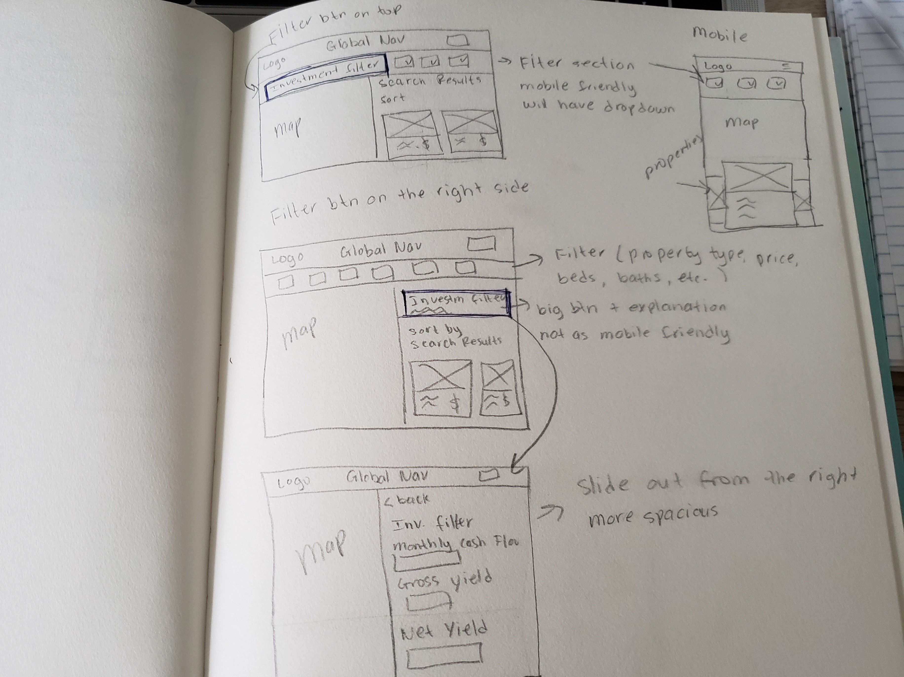
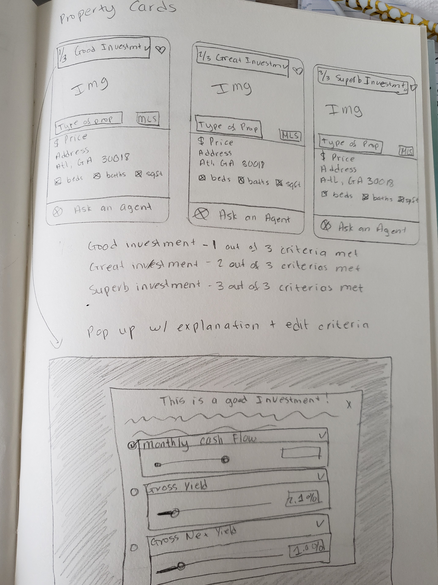

Equator Search Results Page
During my time at Altisource, I was assigned as the main UX/UI designer for one of our sub-unit called Equator.com. Equator is a property marketing platform that allows investors to find auction, foreclosure, and short sale houses. The platform overall is outdated and needed much UX and UI improvement to help increase our investor base.
During this project phase, I was tasked to clean up the user interface of the search results page using the newly developed design system and implement the investment filter so investors can further receive more accurate search results.
Research
After setting up meetings with the Design Director and Product Manager, I was able to grasp the scope of the project. Some of my findings are as follows:
- Must implement an investment filter in the filter section
- Investors should be able to narrow their search based on estimated monthly cash flow, estimated gross yield, and estimated net yield
- Results should highlight properties that are best matched with the investor's requirements
Requirements
- Due to the pandemic, we'll have no budget or participants for user testings
Constraints
- Since we won't have participants for user testings, I'll have to rely on past data from older projects, feedback, and user behavior analysts from the CRM team
Problems
- Create a filter feature for investors to narrow their search results
- Categorize search results in 3 categories based on how it meets investor's search criteria: good investment, great investment, and superb investment
Solutions
Ideation
I began exploring different ways to structure the investment filter. There were two main debatable ways to present the investment filter button (see below). We spent great amount of back and forth between designers and the product team debating whether we should place the investment filter button on the top with other filter features or to the right side. Due to the time constraint, our team decided to keep the investment filter on the top with the other filters in mobile view, but have it display on the right in tablet and desktop view.

If we had a budget and participants, I would test both placements to see which would drive the best results. Ideally, interviewing users would give great insights, and click behaviors would verify the best results.
The next challenge was to categorize the search results. This process caused a total teardown of the current property card because of the limited real estate and the amount of information need to be included.

Design
The time frame for designing was only one week, thus, I decided to jump right into high fidelity. Luckily, I had created a design system prior, so this process was less time consuming.